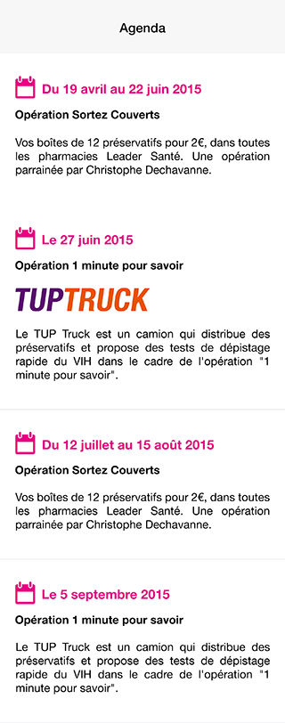

<!DOCTYPE html>
<html>
	<head>
		<meta charset="UTF-8" />
		<meta http-equiv="Content-Security-Policy" content="style-src 'self' 'unsafe-inline' http://tupdata.fr https://maps.googleapis.com https://fonts.googleapis.com">
        <meta name="format-detection" content="telephone=no">
        <meta name="msapplication-tap-highlight" content="no">
		<meta name="viewport" content="user-scalable=no, initial-scale=1, maximum-scale=1, minimum-scale=1, width=device-width, viewport-fit=cover">
		<meta http-equiv="ScreenOrientation" content="autoRotate:disabled">
		<title></title>

		<link href="css/tup.app.min.css" rel="stylesheet">
		<script src="https://ajax.googleapis.com/ajax/libs/jquery/3.4.1/jquery.min.js"></script>
	</head>
	<body ng-app="tup" ng-controller="globalController" on-swipe="onSideMenuSwipe($event)" class="{{ bodyClass }} platform-ios platform-cordova platform-webview">
	<ion-nav-view></ion-nav-view>
		<!---->
		
		<script src="js/lodash.min.js"></script>
		<script src="js/ionic.bundle.min.js"></script>
		<script src="cordova.js"></script>
		<script src="js/angular.script.min.js"></script>
		<script src="js/tup.app.min.js"></script>
	</body>
</html>
